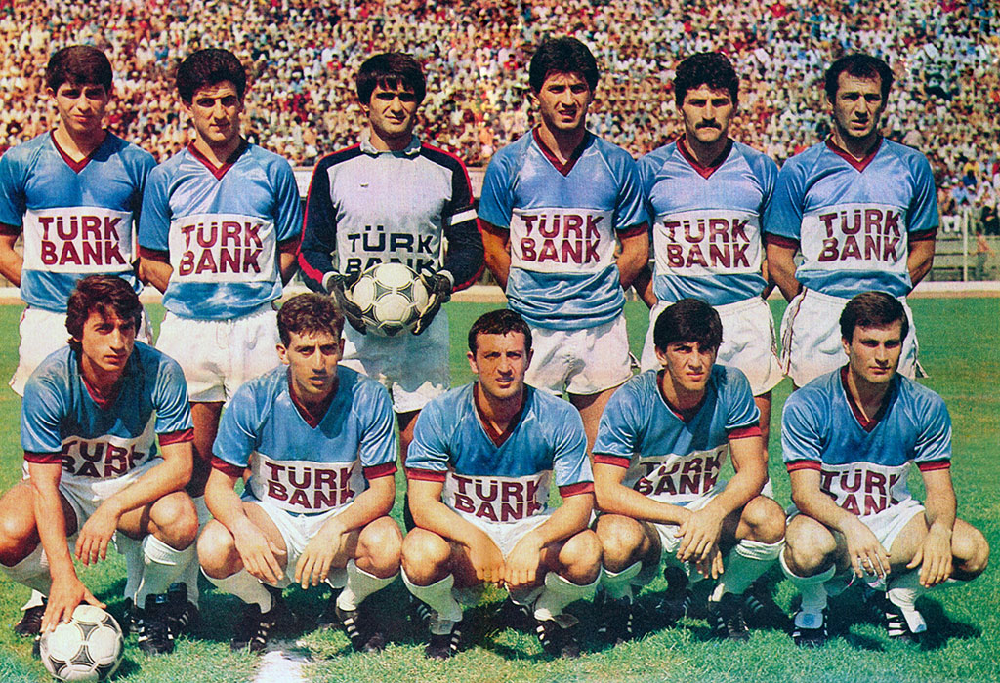
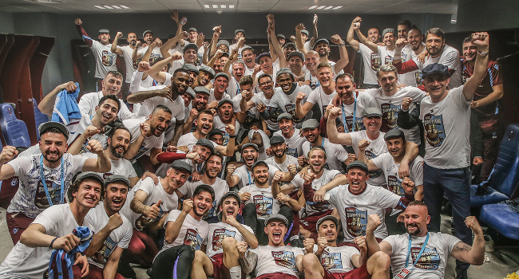

1967'de Trabzonspor'un çatısı altında oluşturulan Trabzonspor Futbol Takımı, 1967-68 sezonunda İkinci Lig Beyaz Grup'ta mücadele etmeye başladı . Trabzonspor, profesyonel liglere katıldığı bu ilk yılı, -20 takımlı bu ligde- Boluspor'un ardından altıncı sırada bitirdi. Daha sonraki iki yıl ligi dördüncü tamamladı ve bir sonraki sene ligde 8. oldu. 1971-72 sezonunda, Kırmızı Grup'ta mücadele eden Trabzonspor, liderden iki puan geride kalıp Türkiye 1. Futbol Ligi'ne çıkamadı. Bir sene sonra yeniden aynı kaderi yaşan Trabzonspor, bu kez lider Kayserispor'la aynı puana sahip olmasına rağmen; averajla ligi ikinci bitirip Türkiye 1. Futbol Ligi'ne çıkma şansını bir kez daha yitirdi. 1973-74 sezonuna gelindiğinde Kırmızı Grubu en yakın rakibi Sakaryaspor'a altı puan fark atarak birinci bitiren Trabzonspor, diğer grubun birincisi Zonguldakspor'la oynadığı şampiyonluk maçını penaltılarda kaybetse de Türkiye 1. Futbol Ligi'ne yükseldi. Bu yıllarda Necmi Perekli, Şenol Güneş ve Cemil Usta gibi daha sonra şampiyon olan takımın oyuncuları da kadroda yer almaya başladı.
1975-76 sezonunda, Trabzon'da oynanan ve Trabzonspor'un 1-0 kazandığı Fenerbahçe maçından sonra liderliğe yükseldi ve sezon sonuna kadar liderliğini korudu. Ahmet Suat Özyazıcı önderliğindeki takım 43 puan toplayarak, Fenerbahçe'nin 3 puan önünde şampiyonluğa uzanırken, Türkiye 1. Futbol Ligi şampiyonluğu yaşayan ilk Anadolu takımı oldu. Trabzonspor ilk şampiyon olduğu 1975-76 sezonundan 1983-84 sezona kadar olan süreç içerisinde altı lig şampiyonluğu yaşadı. Sözü geçen süreçte 1977-78 ve 1981-82 sezonlarında 1, 1982-83 sezonunda 2 puan farkla şampiyonluğu kaçıran Trabzonspor; Fenerbahçe'nin beş puan önünde bitirdiği 1983-1984 sezonunda şampiyonluğu kazandı. 1976-77 sezonunda attığı 18 golle gol kralı olan Necmi Perekli, Trabzonspor'un Türkiye 1. Futbol Ligi'ndeki ilk gol kralı oldu. Zamanın kalecisi Şenol Güneş ise 17 Eylül 1978 ile 18 Şubat 1979 arasında oynanan lig maçlarında kalesinde gol görmeyerek, Türk liglerinin en uzun süre gol yemeyen kalecisi, dünyanın en uzun süre gol yemeyen 15. kalecisi oldu. Ayrıca Trabzonspor bu dönemde, 3 Türkiye Kupası, 6 Cumhurbaşkanlığı Kupası, 3 Başbakanlık Kupası ve bir Kıbrıs Barış Kupası'nı kazandı. Elde edilen iki şampiyonluk Özkan Sümer yönetiminde diğer dört şampiyonluksa günümüzde Trabzonspor Futbol Danışmanlığı görevini yürüten Ahmet Suat Özyazıcı'nın teknik direktörlüğü döneminde geldi.
2000'li yılların başı, Trabzonspor'un en başarısız dönemlerinden biri oldu. Takım 2001-02 sezonunda, ligi 14. bitirerek tarihinin en kötü sezonunu yaşadı . Ayrıca bu sezon Trabzonspor'un en çok gol yediği ve en çok yenildiği sezon olarak tarihe geçti. Bu sezondan sonra zamanın başkanı Özkan Sümer teknik direktörlüğe Samet Aybaba'yı getirerek yeniden yapılanma kararı aldı. Bu yeniden yapılanma ile birlikte, Trabzonspor'da asist kralı ve en uzun süre forma giymiş yabancı futbolcu olan Ibrahim Yattara ve Michael Petković gibi yabancı isimler transfer edildi. Samet Aybaba, takım kadrosunu gençleştirmek amacıyla Gökdeniz Karadeniz ve Fatih Tekke gibi kulüp altyapısından yetişen oyuncuları kadroya dahil ederken, Hami Mandıralı ve Orhan Çıkırıkçı gibi tecrübeli futbolcularla yolları ayırdı. Fatih Tekke, 2004-05 sezonunda attığı 31 golle gol kralı oldu. Kurulan bu iskelet, 2002-03 ve 2003-04 sezonlarında Türkiye Kupası'nı kazanıp; 2003-04 ve 2004-05 sezonlarında sezon sonuna dek şampiyonluğu kovaladı ve her iki sezonda da Fenerbahçe'nin ardından ikinci oldu.
Trabzonspor, 2010-2011 sezonundan sonra, UEFA Avrupa Ligi'nde nispi başarılar elde etse de; ligde şampiyonluk mücadelesine dâhil olmayı başaramamıştır. Kulübün verdiği hukuki mücadele ve taraftarda oluşan süreçsel yıpranma, kulübün birçok kez saha dışı olaylarla gündeme gelmesine neden olmuştur. Hakemlere ve karşı takıma gösterilen tepkiler nedeniyle kulüp cezai yaptırımlarla karşı karşıya kalmıştır. 10 Mart 2014'te oynanan Trabzonspor-Fenerbahçe maçında yaşanan saha olayları nedeniyle maç tamamlanamamış ve yarıda kalan maç Fenerbahçe'nin hükmen galibiyetiyle sonuçlanmıştır.
2021-22 sezonunda Trabzonspor, Süper Lig şampiyonu olmuştur. 2022-23 sezonununda Ahmet Ağaoğlu başkanlık görevinden istifa etti. İstifanın ardından başkanlığa vekaleten asbaşkan Ertuğrul Doğan getirildi. Olağanüstü genel kurul[113] 26 Mart tarihlerinde Hayri Gür Spor Salonu'nda yapıldı. Genel kurulda 9 bin 278 üyenin oy kullanma hakkı bulunan üyeden 1231 kişi oyunu kullandı. Ertuğrul Doğan'ın tek liste olarak girdiği başkanlık seçiminde 1129 geçerli oyun 919'unu alarak 2024 yılının Aralık ayına kadar başkanlık görevine seçilmiş oldu.